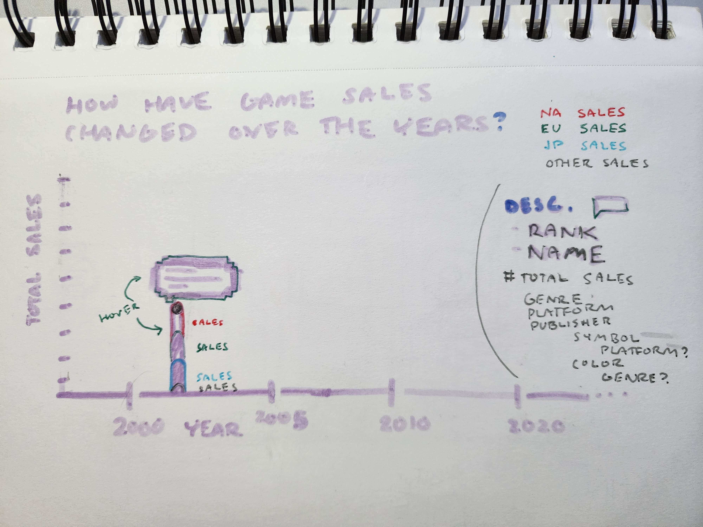

I started by searching Kaggle for data that would best interest me in creating some great work. I found this Game Sales Dataset by Gregory Smith that seemed perfect for me. The dataset contained basic qualitative data for each game (like Name, Genre, Publisher, etc.) and lots of different quantitative sales data (Global, North American, European, Japanese and Other regions sales).

This graph combined a scatterplot graph with a bar graph. If I were to just use a bar graph, then lots of the individual data for each game would be hidden and you would only be able to see the top selling game per year. However, a bar graph also has its benefits as you can get a better sense of the height of the object by highlighting the space between top and bottom. I was able to use this to show more data with it as well.